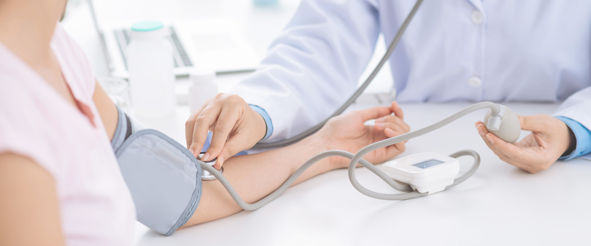

ЧАСТНАЯ СКОРАЯ ПОМОЩЬ
Работаем 27/7 (без выходных ) Доктор скажет, что делать , пока скорая едет Вызов бригады с одого звонка
0501-103-000
0998-103-000

ЧАСТНАЯ СКОРАЯ ПОМОЩЬ 2
ТРаботаем 27/7 (без выходных ) Доктор скажет, что делать , пока скорая едет Вызов бригады с одого звонка
0501-103-000
0998-103-000

h2>ЧАСТНАЯ СКОРАЯ ПОМОЩЬ 2
ТРаботаем 27/7 (без выходных ) Доктор скажет, что делать , пока скорая едет Вызов бригады с одого звонка
0501-103-000
0998-103-000